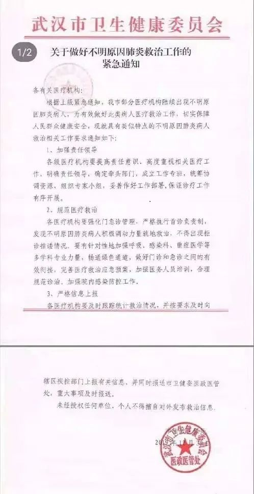

[](https://file45b5c690c4cc.aiwall.com/v3/idea/SEGp9Tci?from=timeline&suid=5C69FCBD-BE96-4188-A608-06F76CC40AAC&sl=2&unid=ohAJ7wYjKpOxwRuoC7qO0AwTPu4k&wxid=odVsFj_spPvxlb8g7OpzQIsTBNTE&latestUser=1](https://file45b5c690c4cc.aiwall.com/v3/idea/SEGp9Tci?from=timeline&suid=5C69FCBD-BE96-4188-A608-06F76CC40AAC&sl=2&unid=ohAJ7wYjKpOxwRuoC7qO0AwTPu4k&wxid=odVsFj_spPvxlb8g7OpzQIsTBNTE&latestUser=1)[](https://file45b5c690c4cc.aiwall.com/v3/idea/SEGp9Tci?from=timeline&suid=5C69FCBD-BE96-4188-A608-06F76CC40AAC&sl=2&unid=ohAJ7wYjKpOxwRuoC7qO0AwTPu4k&wxid=odVsFj_spPvxlb8g7OpzQIsTBNTE&latestUser=1)[](https://file45b5c690c4cc.aiwall.com/v3/idea/SEGp9Tci?from=timeline&suid=5C69FCBD-BE96-4188-A608-06F76CC40AAC&sl=2&unid=ohAJ7wYjKpOxwRuoC7qO0AwTPu4k&wxid=odVsFj_spPvxlb8g7OpzQIsTBNTE&latestUser=1){kind=link}
叶青：武汉出“硬招”了！
原文链接 备份链接 非常时期，武汉成了全国人民挂念、祈福的城市。封城后，武汉人民的真实生活是什么样？ 武汉在发生哪些变化？ 正和岛自1月26日起特别推出“叶青专栏”。叶青是一位定居武汉40年的市民，也是一名学者和官员。在过往多期的专栏文章 …
23.02.2020

本文字数：4209，阅读时长大约7分钟
导读：尽管1月20日这天还没有人知道会有这么多人感染新冠肺炎，但民众开始逐渐意识到新冠肺炎疫情的严重，这源于两个标志性事件。
作者 | 第一财经 陈益刊
2019年12月，武汉已经进入寒冬，最低气温逼近0度。没有人会想到，伴随武汉进入寒冬的，不是冬雪，也不是大雨，而是一场令人震惊的特大疫情。
从病患的陆续发现，到医生拉响警报，再到疫情信息第一次公之于众，以及专家对病毒危害和传染性的不断认知，甚至最后发展到武汉封城，全国驰援，全民抗疫，事件已持续近两个月，至今仍未结束。
回顾整个事件的缘起、发展、过程以及中间的点点滴滴，是为了更好地反思和总结，我们无须回避当初的预警不足和仓促应对，也不必回避我们在疫情防控系统和公共卫生管理上的短板。正视当下，是为了更好地指向未来。
对于这场疫情，人们最早获悉的信息，是2019年12月30日晚间，网络上传播的两份文件，一份名为《关于做好不明原因肺炎救治工作的紧急通知》，另一份是《市卫生健康委关于报送不明原因肺炎救治情况的紧急通知》。两文件的落款时间都是12月30日。
这两份文件透露出一个重要信息：武汉的确正在发生一场不明原因肺炎疫情。不过，绝大多数武汉人并没有看到这些信息。看到这些信息的人也将信将疑，生活跟往常一样平静。

打破这一平静的，是12月31日一篇来自第一财经、题为《武汉不明原因肺炎已做好隔离，检测结果将第一时间对外公布》的报道。这是机构媒体首次披露疫情，并从武汉市卫健委处独家证实了上述文件的真实性。
此后，大批媒体的跟进及武汉市卫健委的公开通报，引发了世人对这场疫情的全面关注。不过，陆续公布的论文、官方文件和第一财经后续对患者的采访显示，疫情的发生还应上溯到更早的时候。

医生拉响警报
这场疫情的爆发的中心，目前依然聚焦在位于武汉市江汉区的华南海鲜批发市场（下称“华南市场”）。
12月19日，在华南市场经营干货铺的摊主刘冰（化名）发高烧，浑身无力，肌肉酸疼。他的妻子苏丽（化名）不久后也感到不适。
“像感冒，不过我是低烧（37.5度），浑身没力气。”苏丽2月20日对第一财经记者回忆道。苏丽的父亲跟他们住一起，不久后也感到身体不适。
随后，夫妻二人来到华中科技大学同济医学院附属同济医院。医生在给两人做相关检查后，没有查出病原，但肺部阴影重，因此医生按照肺炎给他们治疗，两人症状有所减轻。“当时医生也不知道我们得了什么病。”苏丽说。
像刘冰一样，整个去年12月，在华南市场工作的20多人出现了类似症状。他们分别到湖北省中西医结合医院、同济医院、武汉市中心医院等医院就医，引起了医生们的警惕。
最早拉响警报的，是湖北省中西医结合医院呼吸与重症医学科主任张继先。她在发现多起“不明原因肺炎”病例后，12月27日将这一情况反映给医院，医院立即上报江汉区疾控中心。29日，医院发现这些患者中的大部分人都有华南市场接触史后，当天立即向省、市卫健委的疾控处报告。
这立即引起了官方重视。29日当天，一场针对华南市场不明原因肺炎的调查处置工作正式启动，并在第二天拿出了报告。
第一财经获得的这份调查处置报告显示，截至2019年12月30日，武汉市累计搜索不明原因肺炎病例25例，完成流行病学调查核实20例，这些病例中就包括刘冰一家人。
正是这一天，关于武汉不明原因肺炎的“小道消息”开始在网上传开。
12月30日，武汉市中心医院眼科医生李文亮看到一份病人的检测报告，报告标注有“SARS冠状病毒”。他提醒同为临床医生的同学注意防护。
“冠状病毒感染确定了，正在进行病毒分型”。他在微信群里的发言被人截屏流传出来，让一些市民开始警觉。
但处于疫情风暴中心的华南市场，却依然如往日一样忙碌。12月31日13时，第一财经记者在华南市场看到，这个有600多个摊位的市场，摊主们像往日一样照常营业，一些市民逛着市场买肉类等食品，整个市场戴口罩的人寥寥无几。在市场西区，店铺紧凑，销售后产生的垃圾随处堆放，地面肮脏潮湿，通风较差。
记者当时随机采访的二三十个摊主中，大部分人并不知道这里有人得了不明原因肺炎。即便一些摊主看到了媒体上午的报道，也斥责这是假新闻、造谣炒作而已。不过也有个别摊主悄悄戴上了口罩。
一位华南市场管理人员见记者戴口罩和手套、穿鞋套来采访，第一句话是：“你这也太夸张了。看你这样子要把我吓死。”
31日13:38，武汉市卫健委官网发布《关于当前我市肺炎疫情的情况通报》，称近期部分医疗机构发现接诊的多例肺炎病例与华南海鲜城有关联，通过搜索和回顾性调查，目前已发现27例病例，其中7例病情严重，其余病例病情稳定可控，有2例病情好转，拟于近期出院。
这是官方首次正式对外通报华南市场发生了不明原因肺炎疫情。记者将手机上的这则公告页面递给一位斥责媒体“造谣”的女摊主看，她还没读完全文，就急忙抬头问对面的摊主是否有口罩。当得知有后，她飞奔过去抓起一个口罩就戴上，旁边围观的几人大笑。
第二天，即2020年1月1日，华南市场被勒令休市进行环境卫生整治。不久后，武汉不明原因肺炎的病原体被国家卫健委初步判定为新型冠状病毒。
不过，1月30日新英格兰医学期刊（NEJM）发表的论文《新型冠状病毒感染的肺炎在中国武汉的早期传播动力学》称，有证据表明，早在2019年12月12日之前，最先出现的病例并无华南市场接触史。
这意味着，病毒的来源和始发地还有待更多的探索和解析。
两个标志性事件
元旦后，武汉不少医院的发热门诊看病人数激增。病人排起了长队，收治病床渐渐变得一床难求。
不过，外界观察疫情进展的主要窗口——武汉市卫健委通报的疫情数据却显示，相当长一段时间里病例没有增加，反而有所减少，这让外界以为疫情被控制住了。
2019年12月31日至2020年1月17日这18天时间里，官方数据中的新型冠状病毒肺炎确诊病例从27例增至59例后，开始下降至41例，其间长达12天没有新增病例。湖北之外的省份，也没有病例报告。
但在中国周边国家和地区，泰国和日本一共出现三例确认病例，且都有武汉旅居史。此时，中国香港、越南、新加坡等地，也出现了疑似病例，但均未确认。
而在这12天时间里，武汉市和湖北省的两会相继召开。1月6日至10日，武汉市召开两会。1月11日至17日，湖北省召开两会。
武汉市卫健委的前期通报宣称“未发现明确的人传人证据，未发现医务人员感染。该病可防可控”；后期通报还称“密切接触者中，没有发现相关病例”。
这些说法，在相当程度上导致武汉乃至湖北各界缺乏警惕、疏于防护。1月18日，农历小年，武汉江岸区百步亭社区还举办了声势浩大的“万家宴”活动。
后来，武汉市长周先旺在接受央视采访时对此作了反思。他说，今年之所以继续举办百步亭万家宴这个活动，是基于“之前我们对这一次疫情传播、是对人与人之间有限性传播的这个判断，对这件事预警不够” 。
1月18日开始，长期“稳定”在41例的新冠肺炎确诊病例数开始快速增长，到20日，全国确诊病例数已经增至291例。
实际上，当时未确诊的感染人数远远超过这一数字。后来国家疾控中心的研究显示，截至1月20日，全国至少有6174例新冠肺炎患者发病。
新一期的《中华流行病学杂志》刊登的《新型冠状病毒肺炎流行病学特征分析》一文还披露，在1月10日之前，全国20个省份已出现病例。
此文通过对截至2020年2月11日中国内地报告的超过7万多病例的流行病学特征进行分析，发现新冠肺炎病人发病时间在经历12月到1月初的缓慢发展后，在1月10日开始陡然上升。在1月11日到20日（中国工程院院士、国家卫健委高级别专家组组长钟南山宣布疫情存在“人传人”那天）之间，病例暴增5417例，随后疫情彻底暴发。
尽管1月20日这天还没有人知道会有这么多人感染新冠肺炎，但民众开始逐渐意识到新冠肺炎疫情的严重，这源于两个标志性事件。
一是1月20日晚上，针对“新型冠状病毒感染的肺炎疫情”防控情况，钟南山院士接受央视采访时首次表示疫情出现人传人和医务人员感染情况。这一消息震动全国。
另一个标志性事件是，1月20日晚，新华社发布消息称，疫情发生后，党中央、国务院高度重视。中共中央总书记、国家主席、中央军委主席习近平对新型冠状病毒感染的肺炎疫情作出重要指示：湖北武汉市等地近期陆续发生新型冠状病毒感染的肺炎疫情，必须引起高度重视，全力做好防控工作。
同一天，国务院总理李克强主持召开国务院常务会议，进一步部署新冠肺炎疫情防控工作。其中武汉市要严格落实防控措施，把好相关市场关闭、野生动物管控和机场、车站、码头等体温筛检关口。并落实早发现、早报告、早隔离、早治疗和集中救治措施。
为落实上级部署，采取更严格的举措，内防扩散、外防输出，防止疫情扩散蔓延，武汉作出新的部署。20日这天，武汉市成立新型冠状病毒感染的肺炎疫情防控指挥部（下称“武汉新冠肺炎防控指挥部”），统一领导、指挥全市疫情防控。
政府更严格防控行动背后，是人们对新冠病毒有了颠覆性的认识。
面对越来越多的发热病人，为了方便就医，20日晚武汉市公布了61家发热门诊医疗机构，和9家定点医疗机构，并承诺对确诊患者的治疗费用由政府兜底，凡在发热门诊留观的患者，门诊的治疗费也全由政府埋单。
封城：艰难的抉择
由于新冠病毒能够人传人，疫情快速蔓延扩散至全国其他地方。加之病例检测速度加快，从1月21日开始，武汉的确诊病例快速增长。
22日，湖北省启动突发公共卫生事件II级应急响应。武汉市当日要求在该市公共场所实施佩戴口罩的控制措施。
截至1月23日，国家卫健委收到29个省（区、市）累计报告新型冠状病毒感染的肺炎确诊病例830例，其中仅武汉一市就高达495例。一些一线医护人员此时已感染上新冠肺炎。李文亮就是其中之一。
疫情越来越严重。为了内防扩散、外防输出，疫情重灾区的武汉，终于在23日凌晨做出一个重大决定：封城。
1月23日凌晨，武汉新冠肺炎防控指挥部发布公告：自2020年1月23日10时起，该市城市公交、地铁、轮渡、长途客运暂停运营；无特殊原因，市民不要离开武汉，机场、火车站离汉通道暂时关闭。
作为封城建议者之一，国家卫健委高级别专家组成员、中国工程院院士李兰娟不久后接受媒体采访时表示，武汉实施进出人员管控，是因为疫情防控已经到了刻不容缓的程度，只有严格控制传染源，才能不让传染病发生大流行。
为什么作出这一判断？李兰娟说，因为从各省感染的情况来，武汉出来的人导致了各个省感染，不仅是一代感染，可能有的省份都已经产生了第二代感染，这是非常危险的。感染如果再继续扩大，如果其他省份没有控制住，也像武汉那样蔓延，那中国的经济社会损失会很惨重。
【相关阅读】


原文链接 备份链接 非常时期，武汉成了全国人民挂念、祈福的城市。封城后，武汉人民的真实生活是什么样？ 武汉在发生哪些变化？ 正和岛自1月26日起特别推出“叶青专栏”。叶青是一位定居武汉40年的市民，也是一名学者和官员。在过往多期的专栏文章 …
原文链接 备份链接 韩挺/文 2月6日，武汉市新增新型冠状病毒肺炎病例仍在增加，1501例。根据专家的解释，这仅是通过核酸检测确诊的新增病例，如果考虑到还没有机会接受核酸检测的病患，这并非完整的增加病例数。 武汉乃至湖北是这场全民抗疫战争 …
原文链接 备份链接 17 年前的那场公共卫生危机，未能及时公开疫情成为事后被诟病最多的问题之一，也成为中国疾病防控系统以及政府信息公开等许多方面的重要转折点。 而多年后，越来越多的互联网官方渠道成为了重大事件的定海神针，「官宣」被普遍接 …
原文链接 备份链接 【财新网】（记者 黄蕙昭）一则半夜发布的“封城”通告惊动全国，也拉开武汉肺炎防疫之战新势态。1月23日凌晨两点，武汉市新型冠状病毒感染的肺炎疫情防控指挥部通报宣布，今日10时起，武汉公交、地铁、轮渡、长途客运暂停运 …
原文链接 备份链接 叶青武汉日记：省市同步换帅 8465 来源：正和岛 作者：叶青 02-14 [ …